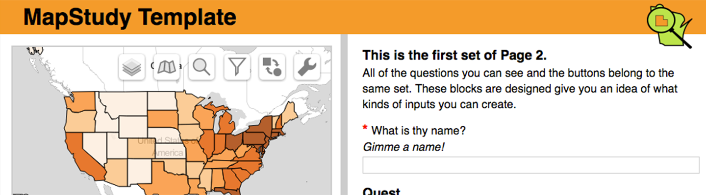

Research in UI/UX Design




Increasingly, cartographers need both to encode geographic information as well as code a useful and usable interface for exploring the resulting maps. But interface design is much more than pushing 0s and 1s, and few time-tested principles exist to inform design of the user experience. Increasingly, we contribute to interaction science, approaching topics such as cartographic interaction primitives (i.e., the building blocks of an interactive map), interface flexibility versus constraint, user expertise and motivation, coordinated multiview geovisualization, and applications of interactive mapping to support geography.